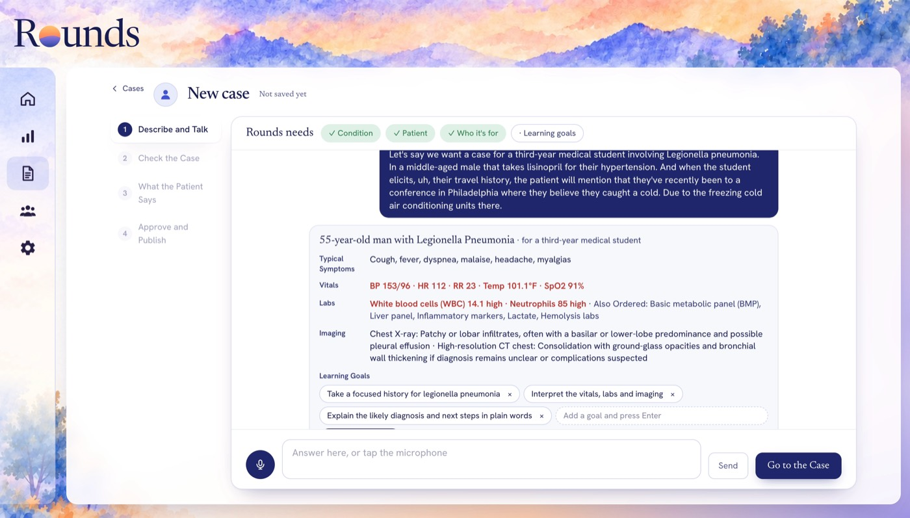
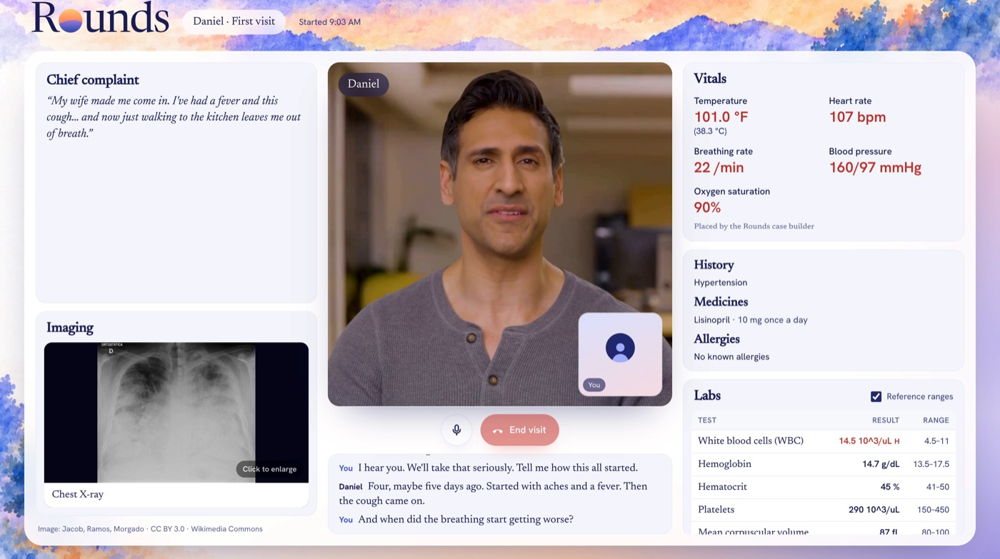

How it works
-
1
Faculty describe a patient
Say who the patient is and what students should practice. Rounds drafts the case, and you approve what the patient can say.
-
2
Students talk with the patient
Out loud and hands-free, in a video-call layout.
-
3
The debrief quotes the student
Seven communication scores, each shown with the line from the transcript it’s based on.


Why schools choose Rounds
- A case in minutes
- Faculty describe the patient in a conversation. There’s no curriculum to upload first, though you can attach your own files.
- No invented findings
- The patient only shares facts faculty approved, so it can’t make up a lab value or an exam finding.
- Scores tied to what was said
- The debrief uses the standard 7-domain communication rubric. Each score quotes the line from the student’s own transcript that it’s based on.
- Faculty have the last word
- Faculty read the feedback first and can change any score before the student sees it.
- Second visits follow on
- A follow-up visit changes depending on what the student did in the first one.
- Practice before SP sessions
- Students get more practice taking a history and explaining a plan in the weeks before their standardized-patient sessions. The SP sessions themselves stay as they are.
For faculty
You decide what each patient knows and what each student sees.
- Describe the patient and the learning goals, by voice or by typing.
- Check the draft case and approve the facts the patient can share.
- Assign it to a class.
- Read each debrief, change any score you disagree with, then release it to the student.
Try Rounds at your school
Interested in a pilot with your students, or have a question? We’d love to hear from you.
Request a demoOr email contact@roundshealth.org